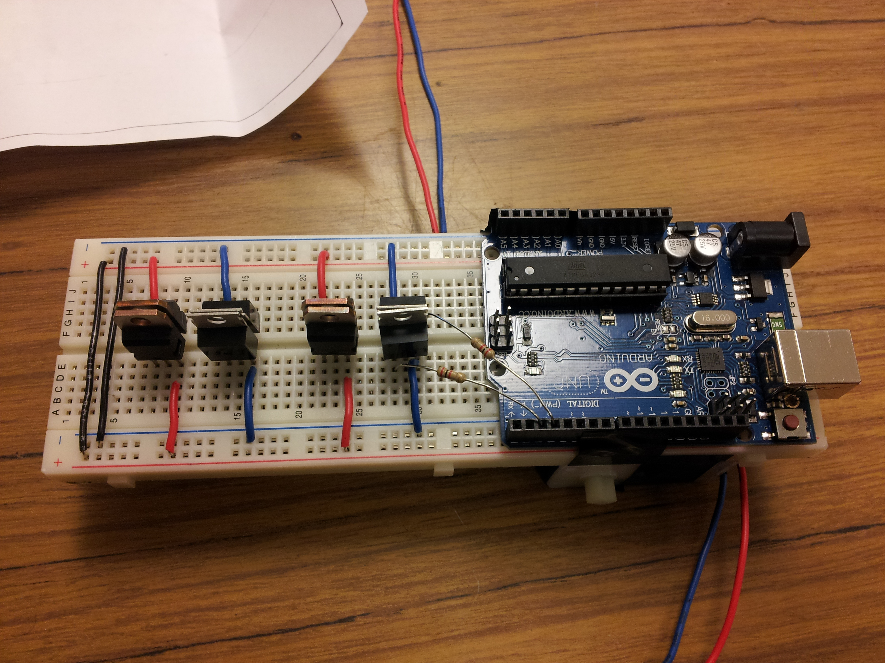

Wiring
1. Arrange the TIP31's and TIP42's along with the Arduino UNO as shown below on the breadboard.2. Then ground pin 3 of each TIP31.
 3. Connect pin 3 of each TIP42 to +5V.
3. Connect pin 3 of each TIP42 to +5V.
4. Connect pin 2 and pin 3 from the arduino digital I/O ti pin 1 of both the first set of TIP31 with a 2k ohm resistor.
 5. Connect pin 2 of each TIP31 to pin 1 of each corresponding TIP42 with a 2k ohm resistor.
6. Do the same to the other H-Bridge (follow steps 2 - 5).
Also connect the ground and +5V to the breadboard
7. Connect diode to pin 2 of the TIP42 aiming the black strip of the diode to the TIP31 diagonal in the H-Bridge. Do the same for the other TIP42 so that it connects to the pin 2 of the TIP32 diagonally positioned from the TIP42.
8. Do the same for the other H-Bridge.
9. Connect Pin 4 and 5 of the arduino digital I/O to the resistors connected to pin 1 of the TIP31 of the other H-Bridge.
10. Connect motor wires to one of the H-Bridges (each of the pin 2 of the TIP42). Connect the other motor to the other H-Bridge in the same way.
11. OPTIONAL: Connect a bluetooth device to the robot. RX connects to pin 10 and TX connects to pin 11 of the arduino. The Ground is connected to ground and the VCC is connected to the +5V.